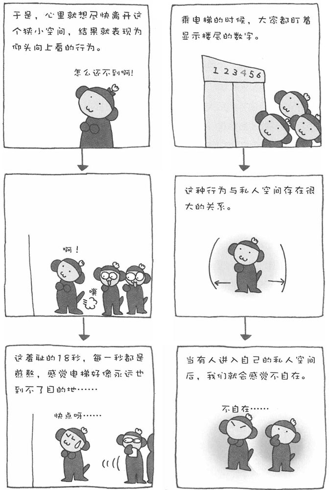

有一天，乘电梯的时候，我和往常一样，仰头看着显示的楼层数，突然意识到为什么我每次乘电梯的时候都会仰着头往上看呢？而且，我看了看周围的人，发现他们竟然和一样，也都仰着头看着显示的楼层数。难道显示的楼层数有什么神奇的魔力吗？还是有什么不可思议的心理效应在背后起作用呢？总之，大家的这种行为让我非常感兴趣。
实际上，乘电梯往上看的行为与我们的"私人空间"有着很大的关系。所谓私人空间，是指在我们身体周围一定的空间，一旦有人闯入我们的私人空间，我们就会感觉不舒服、不自在。私人空间的大小因人而异，但大体上是前后0.6～1.5米，左右1米左右。据调查数据显示，女性的私人空间比男性的大，具有攻击性格的人的私人空间更大。在拥挤的电车中我们会感觉不自在，就是因为有人进入了自己的私人空间。
电梯是一个非常狭小的空间。在电梯中，人与人的私人空间出现了交集，也就是说互相感觉到对方进入了自己的私人空间，所以会感到不舒服，都想尽早离开电梯这个狭窄的空间。向上看正是想尽快"逃离"这个狭小空间的心理的表现。
此外，盯着显示楼层的数字看，不只是为了确认是否到了自己要去的楼层。当我们急于离开这个狭小空间时，不停变换的数字能让我们感到电梯在移动，让我们感觉到自己是在向"解放"前进，从而让缓解焦急的心理。不过，很多电梯的楼层显示数字的部分，竟然没有广告，这让我有点意外。难道广告商都没有注意到这一块资源丰富的"广告沃土"吗？
